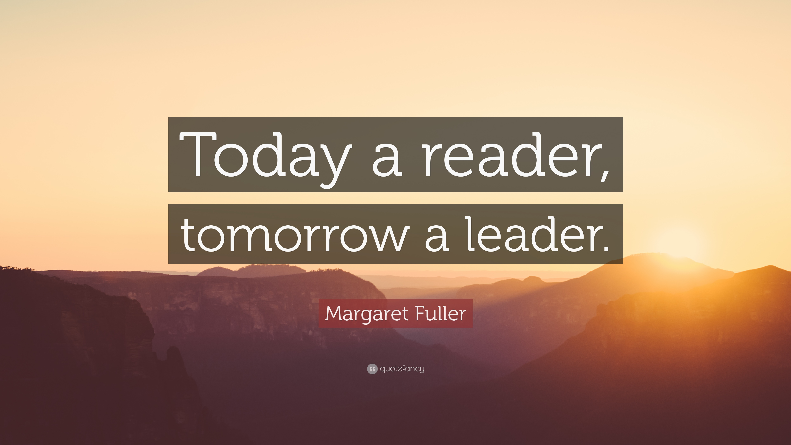

TOP 10 Motivational Books of All Time

1. You Are a Badass: How to Stop Doubting Your Greatness and Start Living an Awesome Life by Jen Sincero
Jen Sincero offers the reader 27 short chapters that are packed with captivating stories, humor, sound advice, and simple
exercises to help people identify and get rid of their self-sabotaging thoughts and habits that prohibit people from
achieving the success that they want. After reading this book, you will have a better understanding of why you act the
way you do and how to accept the things that you cannot change.
2. The Power of Positive Thinking

When it was first published, both psychologists and theologians attacked this book as heretical, and accused author Norman
Vincent Peale of being a crank. Today, science has verified the book's basic concept--that being optimistic makes you
healthier and happier and thus more likely to succeed.
Best quote: "Action is a great restorer and builder of confidence. Inaction is not only the result, but the cause, of
fear. Perhaps the action you take will be successful; perhaps different action or adjustments will have to follow. But
any action is better than no action at all."
3. Smarter, Faster, Better: The Secrets of Being Productive in Life and Business by Charles Duhigg
Read this book for eight productivity concepts that help explain why some people and companies are able to accomplish so
much more than others. Drawing from information on neuroscience and behavioral psychology, along with the experiences
of successful CEOs, generals, pilots, FBI agents, and Broadway songwriters, this well-researched book reveals how productive
people and companies view the world in profoundly different ways than those who find less success.
4. Grit: The Power of Passion and Perseverance by Angela Duckworth
The author of this book, psychologist Angela Duckworth, shows her readers that the secret to success is something she refers
to as “grit.” She addresses all types of people from parents to students to business people to highlight the importance
of the blend of passion and persistence. Duckworth refers to her own experiences beginning early on in her life that made
her come to this conclusion.
5. Choose Yourself by James Altucher
The world is changing. Markets have crashed. Jobs have disappeared. Industries have been disrupted and are being remade
before our eyes. Everything we aspired to for “security,” everything we thought was “safe,” no longer is: College. Employment.
Retirement. Government. It’s all crumbling down. In every part of society, the middlemen are being pushed out of the picture.
No longer is someone coming to hire you, to invest in your company, to sign you, to pick you. It’s on you to make the
most important decision in your life: Choose Yourself.
6. The Four Agreements by Don Miguel Ruiz

Don Miguel Ruiz uses his book The Four Agreements to reveal the limiting beliefs that we commonly hold which rob us of
joy and cause us to endure needless suffering. This book provides an insightful code of conduct which imparts its wisdom
in an accessible manner to its readers.
The Four Agreements encourages self-reflection and encourages us to do better within our everyday lives. This is why
the book has sold over 6 million copies in the U.S. alone and has been a New York Times bestseller for over 8 years.
7. Now, Discover Your Strengths by Marcus Buckingham and Donald Clifton
This is a follow-up book to Clifton's First, Break All the Rules. The author uses his theories from his first book to help
the reader discover what their specific strengths and talents are in life.
This book aims to debunk what the author believes to be a myth that many of us were told as children, which is that anyone
can be anything they want to be. Some readers may find this opinion to be unsettling when beginning this book. However,
the author presents the idea in a very freeing way.n a New York Times bestseller for over 8 years.
8. Mindset: the New Psychology for Success by Carol S. Dweck

Psychologist Carol Dweck outlines years of research in her book Mindset. She argues that the mindset we adopt is a huge
predictor of our success and achievement. She believes that nearly every area of human endeavor can be influenced by the
mindset we adopt and how we select to approach our goals.
9. How to Win Friends & Influence People
Prior to Dale Carnegie's classic, mixing business relationships with personal relationships was considered a bit underhanded,
like nepotism. After Carnegie, business relationships and personal relationships were seen not just as compatible, but
as absolutely inseparable.
Best quote: "The unvarnished truth is that almost all the people you meet feel themselves superior to you in some way,
and a sure way to their hearts is to let them realize in some subtle way that you recognize their importance, and recognize
it sincerely."
10. High-Hanging Fruit: Build Something Great by Going Where No One Else Will by Mark Rampolla
High-hanging Fruit by Mark Rampolla encourages us to reach higher in our life endeavors, especially business if we want
to achieve more success and leave our mark on the world.
In this novel, the reader is encouraged to find ways to align their passion, purpose, and integrity to achieve success.
These lessons can benefit anyone in any field of work and encourage us to stand up for our beliefs and what’s important
to us.
You can download this 10 books and other 100+ best sellers
HERE